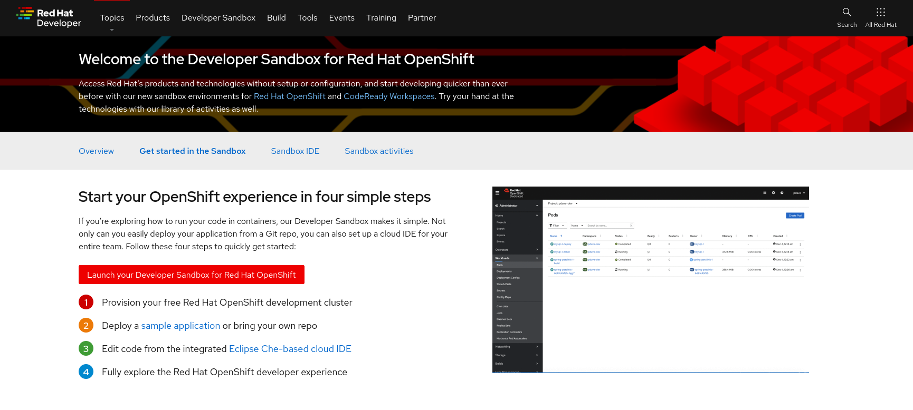
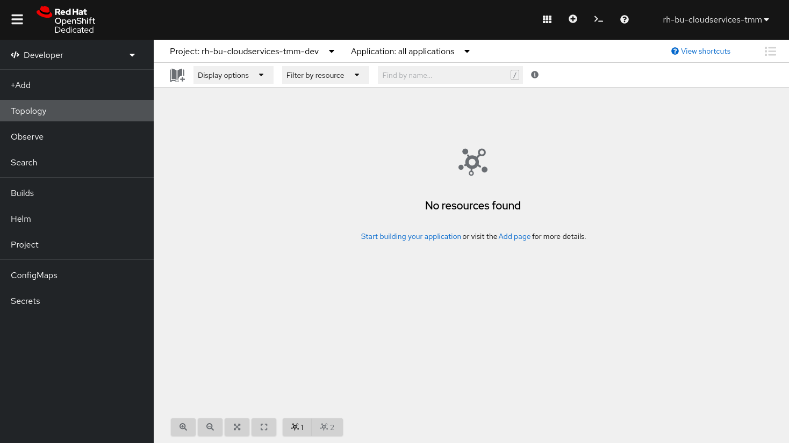
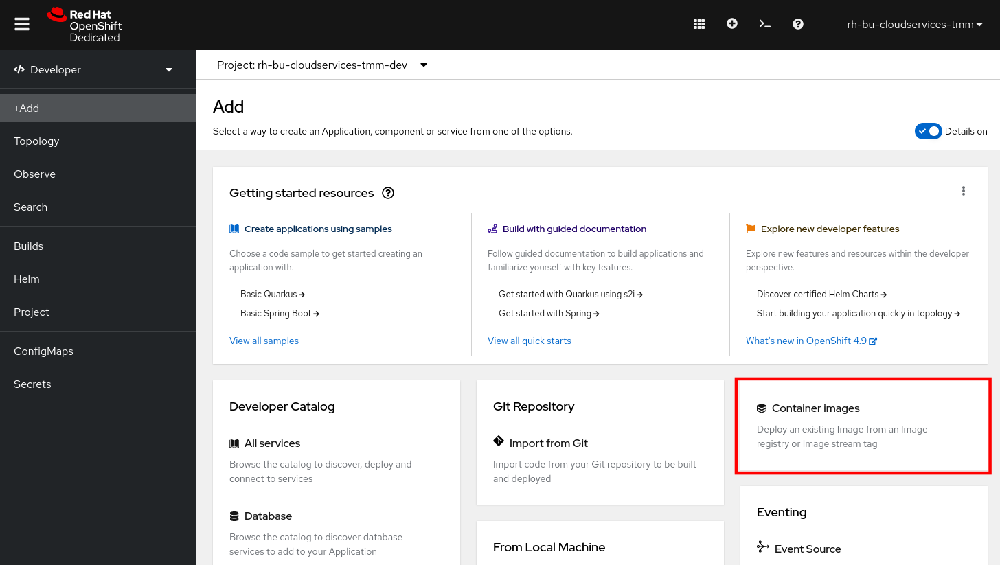
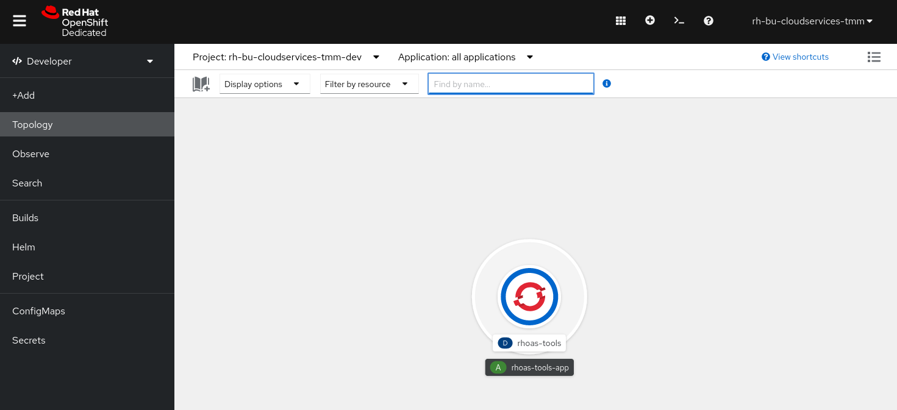
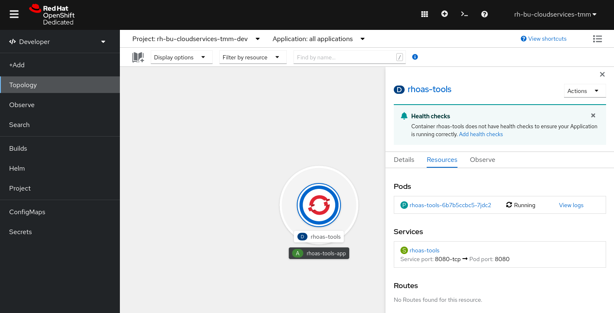
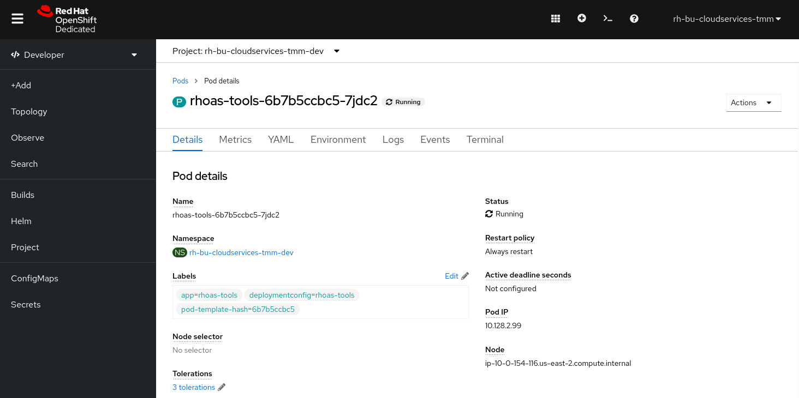

Using Kcat with Kafka instances in OpenShift Streams for Apache Kafka
As a developer of applications and services, you can use kcat to test and debug your Kafka instances in OpenShift Streams for Apache Kafka. Kcat is a command-line utility for messaging in Apache Kafka 0.8 and later. With kcat, you can produce and consume messages for your Kafka instances directly from the command line, and list topic and partition information for your Kafka instances.
We’ve provided kcat in an image that you can deploy in your OpenShift project on the Developer Sandbox for Red Hat OpenShift. So you don’t need to install kcat on your own machine.
Get access to the Developer Sandbox
The Developer Sandbox for Red Hat OpenShift provides you with a private OpenShift environment in a shared, multi-tenant OpenShift cluster that is pre-configured with a set of developer tools.
You can spin up and access your Developer Sandbox with your Red Hat account (the same account you used to create an OpenShift Streams for Apache Kafka instance).
-
In a browser window, go to developers.redhat.com/developer-sandbox/get-started.
-
Click the Launch your Developer Sandbox for Red Hat OpenShift button.
 -
If required, log in in with your Red Hat account username and password.
-
If this is the first time you use the Developer Sandbox, your account needs to be set up. This includes a phone verification step to reduce the creation of fraudulent accounts. After this step it will take a couple of seconds to set up the sandbox.
Click the Start using your sandbox button to launch the sandbox.
-
Click DevSandbox to log into your sandbox.
-
You are redirected to the Developer Perspective of your sandbox OpenShift environment. Feel free to take or skip the Get Started tour.

Install the tools image on Developer Sandbox
To install the tools image on your OpenShift sandbox, execute the following steps:
|
You can also install kcat on your local machine, or run kcat as a Docker container. For instructions refer to github.com/edenhill/kcat. |
-
Make sure you are in the Developer Perspective of your sandbox environment.
-
In the navigation menu on the left, click +Add.
-
Make sure that your OpenShift Project, which you can see at the top of the Add window, is set to
{username}-dev(where{username}is your username in the sandbox OpenShift environment). -
Click on the Container Images card.
 -
In the Image name from external registry field, enter:
quay.io/rhosak/rhoas-tools. -
In the Runtime icon field, select
openshift. -
Leave all other fields set to their default values. You don’t need a route for this application, so under the Advanced Options you can uncheck the Create a route to the Application checkbox.
Click the Create button. This will create a new OpenShift Deployment for the tools image. Pulling the container image and creating the container will take a couple of seconds. -
You will see the deployment of the tools image in the Topology screen. The icon of the application should have a dark blue circle around it, indicating that the application has been deployed successfully.
 -
Click on the icon of the tools application. This will open a panel on the right-hand side of your screen. Click on the Resources tab. You will see the Pods of your Deployment. Currently we only have a single pod.
 -
Click on the link to the pod. This opens the details page of the pod.
 -
Open the Terminal tab. This opens a terminal inside the pod. To check whether you can access the required tools execute the command
kafkacat -Vin your terminal. This should print the kcat version information.kafkacat -Vkafkacat - Apache Kafka producer and consumer tool https://github.com/edenhill/kafkacat Copyright (c) 2014-2019, Magnus Edenhill Version 1.6.0 (JSON, Avro, Transactions, librdkafka 1.5.0 builtin.features=gzip,snappy,ssl,sasl,regex,lz4,sasl_gssapi,sasl_plain,sasl_scram,plugins,zstd,sasl_oauthbearer)
Configuring kcat to connect to a Kafka instance
To enable kcat to access a Kafka instance, configure the connection using the bootstrap server endpoint and the credentials for your Streams for Apache Kafka service account. For kcat, you can configure connection information either by passing options to the kcat command or by using a configuration file. The example in this task sets environment variables and then passes them to the kcat command.
-
On the command line in the terminal of the tools pod, enter the following commands to set the Kafka instance bootstrap server and client credentials as environment variables to be used by kcat or other applications. Replace the values with your own bootstrap server host and port and the client id and client secret of your service account.
export BOOTSTRAP_SERVER=<bootstrap_server> export USER=<client_id> export PASSWORD=<client_secret>
Producing messages in kcat
You can use kcat to produce messages to Kafka topics in several ways, such as reading them from standard input (stdin) directly on the command line or from a file. This example produces messages from input on the command line.
-
On the command line in the terminal of the tools pod, enter the following commands to start kcat in producer mode. This mode enables you to produce messages to your Kafka topic.
This example uses the SASL/PLAIN authentication mechanism with the server and credential environment variables that you set previously.Streams for Apache Kafka also supports the SASL/OAUTHBEARER mechanism for authentication, which is the recommended authentication mechanism to use. However, kcat does not yet fully support OAUTHBEARER, so this example uses SASL/PLAIN.
This example produces messages to a topic in Streams for Apache Kafka named
my-first-kafka-topic. Replace the topic name with the relevant topic as needed. The topic that you use in this command must already exist in Streams for Apache Kafka.To start kcat in producer mode:
kafkacat -t my-first-kafka-topic -b "$BOOTSTRAP_SERVER" \ -X security.protocol=SASL_SSL -X sasl.mechanisms=PLAIN \ -X sasl.username="$USER" \ -X sasl.password="$PASSWORD" -P -
With kcat running in producer mode, enter messages into kcat that you want to produce to the Kafka topic.
Example messages to produce to the Kafka topic:First message Second message Third message -
Close the kcat producer by entering
Ctrl+Cand pressing Enter.
Consuming messages in kcat
You can use kcat to consume messages from Kafka topics. This example consumes the messages that you sent previously with the producer that you created with kcat.
-
On the command line in the terminal of the tools pod, enter the following commands to start kcat in consumer mode. This mode enables you to consume messages from your Kafka topic.
This example uses the SASL/PLAIN authentication mechanism with the server and credential environment variables that you set previously.
This example consumes and displays the messages from themy-first-kafka-topicexample topic, and states that it reached the end of partition 0 in the topic.Starting kcat in consumer mode:
kafkacat -t my-first-kafka-topic -b "$BOOTSTRAP_SERVER" \ -X security.protocol=SASL_SSL -X sasl.mechanisms=PLAIN \ -X sasl.username="$USER" \ -X sasl.password="$PASSWORD" -CThis will produce the following output:
First message Second message Third message % Reached end of topic my-first-kafka-topic [0] at offset 3 -
Close the kcat consumer by entering
Ctrl+C.
You have successfully used kcat to connect to a Kafka instance on OpenShift Streams for Apache Kafka and produce and consume messages from a topic.